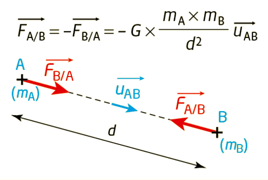
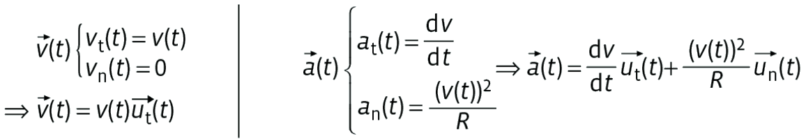

Satellite et orbite
Un satellite est un corps en orbite autour d'un autre. Une orbite est l'ensemble des positions occupées dans l'espace par un astre ou un satellite lorsqu'il est en mouvement autour d'un astre de masse plus grande que la sienne.
Loi d'attraction universelle
Deux corps A et B, de masses respectives mA et mB, séparés d'une distance d, exercent l'un sur l'autre une force d'attraction gravitationnelle :

🔭 Simulation PhET — Gravité et orbites
Ouvre la simulation Gravity and Orbits (PhET Colorado, en français) et explore le mode « À l'échelle » avec le système Soleil-Terre.
- Active l'affichage des vecteurs force et vitesse : vérifie qu'ils illustrent bien le couple action-réaction FA/B = − FB/A.
- Fais varier la masse du Soleil : observe comment évoluent la force gravitationnelle et la trajectoire de la Terre.
- Éloigne la Terre du Soleil (augmente d) : comment évolue la norme de la force ? Est-ce cohérent avec la loi en 1/d² ?
- Teste ensuite le système « Soleil, Terre, Lune » : que remarques-tu sur la trajectoire de la Lune, entraînée à la fois par la Terre et le Soleil ?
Le repère de Frenet
Le repère de Frenet, noté (M ; ut ; un), a pour origine mobile le point M(t) et utilise deux vecteurs unitaires partant de ce point :
- le vecteur tangentiel ut, tangent à la trajectoire et orienté dans le sens du mouvement ;
- le vecteur normal un, perpendiculaire à ut et orienté vers l'intérieur de la courbure.
🧭 Animation interactive — Repère de Frenet sur une trajectoire circulaire
Fais varier le rayon R et la vitesse v du point M à l'aide des curseurs, et observe comment évoluent les vecteurs ut, un, v et a (le mouvement est ici circulaire uniforme : v = constante).
Vecteurs vitesse et accélération dans le repère de Frenet
Dans le repère de Frenet (M ; ut ; un), en notant v(t) la valeur de la vitesse du point M au cours du temps, les coordonnées des vecteurs vitesse v(t) et accélération a(t) sont :

- Choisir le système {satellite S, masse m} et le référentiel d'étude (galiléen).
- Identifier la seule force extérieure : la force de gravitation exercée par l'astre.
- Appliquer la 2e loi de Newton (PFD).
- Utiliser l'expression de l'accélération dans le repère de Frenet pour un mouvement circulaire.
- Identifier terme à terme pour en déduire v, puis T.
Mise en équation
Système : satellite S de masse m | Référentiel : astrocentrique, supposé galiléen | Le satellite n'est soumis qu'à la force de gravitation exercée par l'astre de centre O et de masse M.
D'après la 2e loi de Newton :
Le vecteur a est colinéaire et de même sens que un (dirigé vers O) : l'accélération est centripète, ce qui est cohérent avec un mouvement circulaire uniforme. Or, dans le repère de Frenet, une accélération centripète s'écrit a = v²/r · un, donc :
Période de révolution
Le satellite parcourt son orbite circulaire de périmètre 2πr à la vitesse constante v ; la période T est la durée d'un tour complet :
🛰️ Simulateur — Satellite en orbite circulaire autour de la Terre
Fais varier l'altitude du satellite et observe l'évolution des vecteurs vitesse et accélération, ainsi que de la période de révolution.
✏️ Exercice — La Station spatiale internationale (ISS)
Satellite géostationnaire
Un satellite est dit géostationnaire lorsqu'il paraît immobile pour un observateur terrestre : il est fixe dans le référentiel terrestre. Sa période de révolution est donc égale à la période de rotation de la Terre sur elle-même, soit T = 23 h 56 min ≈ 86 164 s (jour sidéral), et son orbite est nécessairement circulaire, équatoriale.
✏️ Exercice — Altitude d'un satellite géostationnaire
Première loi de Kepler — loi des orbites
La distance Soleil–planète n'est pas constante. La position la plus proche du Soleil est le périhélie (ou périgée pour un satellite terrestre), la position la plus éloignée est l'aphélie (ou apogée).
✏️ Exercice — L'orbite très excentrique de la comète de Halley
Deuxième loi de Kepler — loi des aires
Conséquence directe : la vitesse d'une planète n'est pas constante sur son orbite elliptique. Elle est maximale au périhélie (proche du Soleil) et minimale à l'aphélie (loin du Soleil). Seule une trajectoire circulaire permet d'obtenir une vitesse constante (mouvement uniforme).
🪐 Animation — Balayage des aires égales
La planète P parcourt son orbite elliptique autour du Soleil S. Deux arcs sont mis en évidence, balayés pendant la même durée Δt : l'un proche du périhélie (rouge), l'autre proche de l'aphélie (vert). Lance l'animation : observe que la planète parcourt l'arc rouge rapidement et l'arc vert lentement, alors que les deux aires balayées 𝒜₁ et 𝒜₂ sont rigoureusement égales.
👉 Pour manipuler toi-même une autre simulation de la loi des aires : physique.ostralo.net/kepler
Justification à partir de la loi des aires
Pendant une même durée Δt, la planète parcourt un arc de longueur L₁ près du périhélie, et un arc de longueur L₂ près de l'aphélie, avec L₁ > L₂ (car l'aire balayée est la même mais le rayon vecteur est plus court au périhélie). Comme v = L/Δt :
Le mouvement de la planète n'est donc pas uniforme : c'est une conséquence directe de la 2e loi de Kepler.
✏️ Exercice — Satellite sur une orbite très excentrique
Troisième loi de Kepler — loi des périodes
Pour deux planètes 1 et 2 en orbite autour du même astre : T₁²/a₁³ = T₂²/a₂³. Si la trajectoire est circulaire, alors a = r (rayon de l'orbite) et on a T²/r³ = constante.
Preuve graphique de la 3e loi
Si l'on trace le carré de la période T² en fonction du cube du demi-grand axe a³ pour plusieurs planètes du Système solaire, les points obtenus sont alignés sur une droite passant par l'origine : c'est la signature graphique d'une proportionnalité, T² = k×a³.
Expression de la constante
On a établi en A1 (cas circulaire) : T = 2π√(r³/GM), soit T² = 4π²r³/GM, d'où :
🧮 Calculatrice — Loi des périodes
Connaissant (a₁, T₁) pour une planète de référence, calcule T₂ pour une autre planète de demi-grand axe a₂ (même astre central).
✏️ QCM — Loi des périodes
Accélération d'un satellite
Force exercée par l'astre (masse M, centre O) sur le satellite (masse m, centre P) : F = mg avec g = −G·M/r² · u.
2e loi de Newton : ma = F ⟹ a = g : l'accélération ne dépend pas de la masse du satellite.
Satellite en mouvement circulaire de rayon r
Dans le repère de Frenet : a = dv/dt · ut + v²/r · un
- le mouvement est uniforme ;
- la vitesse est v = √(GM/r) ;
- la période vérifie T²/r³ = 4π²/GM.
Un satellite géostationnaire est fixe dans le référentiel terrestre.
Loi des orbites (1ère loi)
Dans le référentiel héliocentrique, l'orbite d'une planète est une ellipse dont le Soleil occupe l'un des foyers. a = demi-grand axe de l'ellipse.
Loi des aires (2e loi)
Le segment Soleil–planète balaie des aires égales en des durées égales. Conséquence : la vitesse n'est pas constante (max au périhélie, min à l'aphélie).
Loi des périodes (3e loi)
Les trois lois de Kepler sont aussi valables pour le mouvement d'un satellite naturel ou artificiel autour d'une planète ; cette dernière joue alors le rôle du Soleil.
- La force de gravitation universelle varie en 1/d² et est responsable des mouvements des astres.
- Pour un satellite en orbite circulaire, le mouvement est nécessairement uniforme et l'accélération est centripète.
- v = √(GM/r) et T = 2π√(r³/GM) pour une orbite circulaire.
- 1ère loi de Kepler : orbites elliptiques, Soleil à un foyer.
- 2e loi de Kepler : loi des aires ⟹ vitesse non constante sur une ellipse.
- 3e loi de Kepler : T²/a³ = constante, ne dépend que de la masse de l'astre central.
Loi d'attraction universelle
Deux corps A et B, de masses mA et mB séparés d'une distance d, exercent l'un sur l'autre une force d'attraction gravitationnelle F = G·mA·mB/d², avec G = 6,67×10⁻¹¹ N·m²·kg⁻² la constante de gravitation universelle.
Repère de Frenet
Repère mobile lié au point en mouvement, formé des vecteurs unitaires ut (tangent à la trajectoire, dans le sens du mouvement) et un (perpendiculaire à ut, dirigé vers le centre de la trajectoire) ; adapté à la description d'un mouvement circulaire.
Accélération centripète
Composante de l'accélération dirigée vers le centre de la trajectoire (selon un) ; pour un mouvement circulaire, elle vaut a = v²/r.
Mouvement circulaire uniforme
Mouvement sur une trajectoire circulaire à vitesse constante (dv/dt = 0) ; l'accélération est alors purement centripète, dirigée vers le centre du cercle.
Période de révolution
Durée d'un tour complet effectué par un astre ou un satellite sur son orbite ; pour une orbite circulaire de rayon r parcourue à la vitesse v, T = 2πr/v.
Référentiel héliocentrique
Référentiel dont l'origine est le centre du Soleil et les axes dirigés vers des étoiles lointaines fixes ; adapté à l'étude du mouvement des planètes autour du Soleil.
Satellite géostationnaire
Satellite dont la période de révolution est égale à la période de rotation de la Terre sur elle-même ; il paraît donc fixe dans le référentiel terrestre.
Périhélie / Aphélie
Sur une orbite elliptique, position la plus proche du Soleil (périhélie) ou la plus éloignée (aphélie) — on parle de périgée/apogée pour un satellite terrestre. D'après la loi des aires, la vitesse est maximale au périhélie et minimale à l'aphélie.
1ère loi de Kepler — loi des orbites
Dans le référentiel héliocentrique, l'orbite de chaque planète est une ellipse dont le Soleil occupe l'un des foyers.
2e loi de Kepler — loi des aires
Le segment reliant le Soleil à une planète balaie des aires égales pendant des durées égales ; la vitesse n'est donc pas constante sur une orbite elliptique.
3e loi de Kepler — loi des périodes
Pour un même astre attracteur central, le rapport T²/a³ est constant, quelle que soit la planète ou le satellite considéré (a : demi-grand axe de l'orbite).